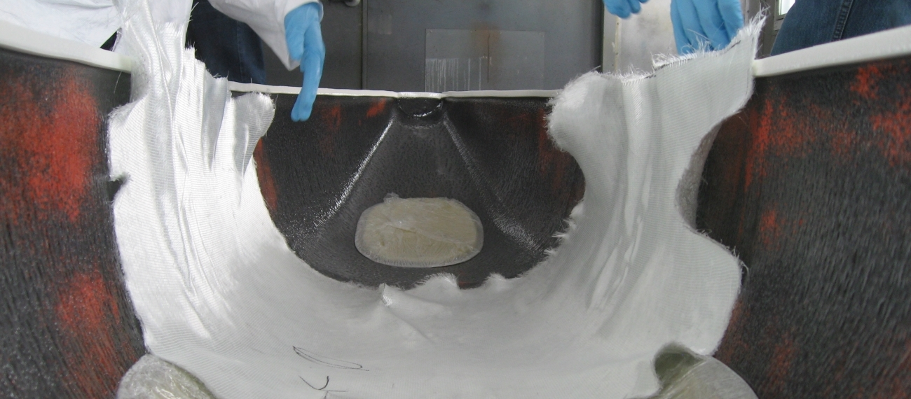
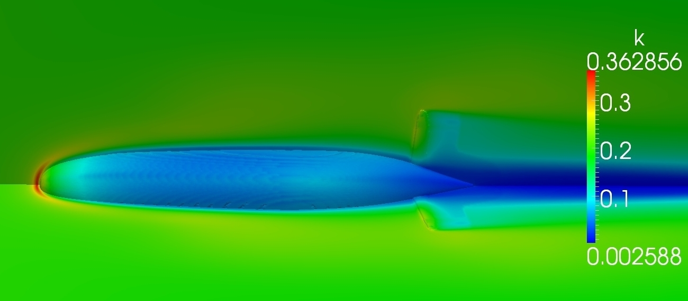

Our submarines are one-person, pedal powered machines built for speed and maneuverability. The team's top speed of 5.14 knots (6mph) was achieved using Wolverine II at the 10th International Submarine Races. Our submarine for the 2017 ISR, Gulo-Gulo, used the same hull-from design and was the first Michigan Human-Powered Submarine to cross the finish line in four years. For the 2018 eISR, the team is designing a new submarine that will take 9 months to design, build, and test. The final submarine is tested in the U-M Marine Hydrodynamics Laboratories, which boasts a 360 foot long model basin, and at the UM Donald B. Canham Natatorium, the University's "state of the art swimming and diving facility".

The submarine is packed with cool and innovative features. It is internally flooded, requiring the pilot to breathe from a SCUBA cylinder. Much like a bike, the pilot pedals to turn the propellers and has a joystick for steering. The pilot also has a digital readout that show information about how the sub is performing. When designing the submarine, team members develop technical skills that are valuable beyond college.
Students on the team use computational fluid dynamics to predict the hull's, finite element analysis to validate highly stressed parts of the drive train, and CAD to model the entire sub from nosecone to propellers. Students also learn several fabrication techniques, including precision CNC machining, fiberglass layup and vacuum bagging, 3D printing, and welding.
